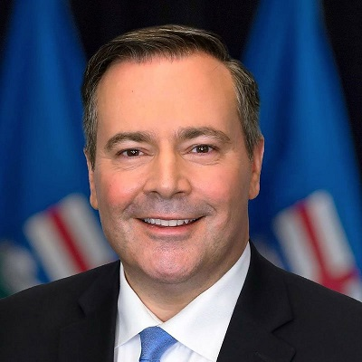

Alberta NDP: Ruralites taken for granted
February 15th, 2021
I was going to do a much longer writeup on this article. The basic gist of it is that Rachel Notley of the NDP and some other Donor-Left shills went to rural Alberta and started blabbing on about "muh Indigenous Rights," which is just code for anti-White policies. Briefly she touched upon some actual real issues that face people, such as poor infrastructure, and the puff piece ended with an accidentally quite insightful moment.
South Peace News:
TDC_ARTICLE_START
Notley’s closing comments were [partly] about what she sees as the Kenney government’s general attitude towards rural Alberta. They think they’ve got rural support locked up, she said, “so they don’t have to do anything to earn it. I hope rural Albertans will tell them they’re not going to be taken for granted.”
TDC_ARTICLE_STOP
Jason "fuck you Whitey" Kenney
That last part is actually true. Donor-Rightists do absolutely nothing for Rural People, especially Rural White People. What Notley doesn't point out is that her party is openly anti-White, and openly Pervert. People don't vote FOR the cuckservatives. People vote AGAINST the Bolsheviks. They look at the NDP and they say "these people are Anti-Whites and Perverts," whether they can perfectly articulate that or not, and they vote against them.
Unfortunately for them, they really are taken for granted, because the United Cuckservative Party, lead by Jason Kenney, is just as anti-White and Perverted as the NDP. If you don't believe me, go read this article I wrote about Caylan Ford, a promising young White Candidate for the UCP who got sacked. They fired her without a replacement in the election, forfeiting her seat, because some Brown Muslim complained that she had been critical of "Gay Pride Parades".
There is no such thing as voting for the lesser of two evils.